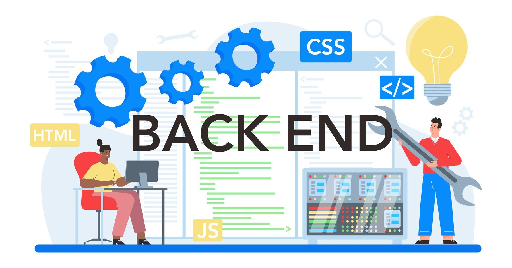

Backend Development
Backend Development Service
What is Backend and what does it do?
Backend Development: The Power Behind the Scenes
Backend development is the foundation of any website or application,
handling the logic, database management, and server-side operations
that make everything function smoothly. While frontend development focuses
on what users see and interact with, backend development ensures that data
is processed, stored, and delivered correctly in response to user actions.
A backend developer works with server-side programming languages like PHP,
Python, Node.js, or Java, along with databases such as MySQL, PostgreSQL, or
MongoDB. These technologies allow websites and applications to handle user requests,
manage data, and execute business logic efficiently. Whether you're logging in,
submitting a form, or processing a payment, the backend is responsible for securely
handling these tasks.
How Backend Development Works
The backend consists of three main components:
Server – This is the machine that hosts the website or application and processes
requests from users. It runs backend scripts that perform various operations, such
as retrieving or updating data.
Database – Stores and manages all the necessary information. Backend developers use
databases to store user credentials, product details, transaction records, and much more.
Application Logic – This is where the business rules are applied. It controls how data
flows between the database and the frontend, ensuring that users get the correct responses
based on their actions.
Backend development also involves working with APIs (Application Programming Interfaces) to
enable communication between different services. For instance, when you book a hotel online,
the backend sends requests to the database to check availability, process payments, and confirm
reservations. APIs also allow backend systems to connect with third-party services like payment
gateways (Stripe, PayPal), email services, or cloud storage providers.
Backend Development is Important
A strong backend ensures that a website or application is:
✔ Fast and Efficient – Optimized queries and caching mechanisms reduce
load times and improve performance.
✔ Secure – Proper encryption, authentication, and authorization prevent
unauthorized access and protect sensitive data.
✔ Scalable – A well-structured backend allows a website or app to handle
increasing traffic and data efficiently.
My Expertise in Backend Development
I specialize in building secure and high-performance backend systems using PHP, MySQL, and
Nginx. Whether you need a simple CMS, an e-commerce platform, or a complex web application,
I ensure that the backend is robust, scalable, and optimized for seamless user experiences.
From database design and server management to API development and authentication systems, I
build backend solutions that power modern applications effectively. If you're looking for a
reliable backend developer to bring your ideas to life, I'm here to help! 🚀
How We Work?
Backend development is the backbone of any application, ensuring smooth data handling, security, and seamless integration with the frontend. Here’s a step-by-step process outlining how we work:
1. Requirement Gathering & Planning
- Understand your project needs and gather functional requirements.
- Decide on the technology stack (PHP, Node.js, Python, MySQL, MongoDB, etc.).
- Plan the database structure and API endpoints for optimal performance.
- Define security measures such as authentication, encryption, and access control.
2. Database Design & Setup
- Choose the right database system (MySQL, PostgreSQL, MongoDB, Firebase, etc.).
- Design a well-structured, scalable, and normalized database schema.
- Implement relations, indexes, and optimization techniques for faster queries.
- Ensure proper data validation and security to prevent SQL injection and data leaks.
3. Backend Development
- Develop secure and optimized server-side logic using PHP, Node.js, or Python.
- Build and document RESTful APIs or GraphQL endpoints.
- Implement user authentication and authorization (JWT, OAuth, or session-based auth).
- Ensure error handling and logging for easy debugging and monitoring.
4. Integration with Frontend & Third-Party Services
- Connect the backend with the frontend (React, Vue, Angular, etc.).
- Integrate third-party APIs such as payment gateways, email services, or cloud storage.
- Optimize API responses for faster data fetching and processing.
5. Testing & Debugging
- Perform unit testing on backend logic and database queries.
- Test API endpoints using tools like Postman or Insomnia.
- Ensure security measures are in place (SQL injection prevention, CORS handling, rate limiting, etc.).
- Fix any bugs, vulnerabilities, or performance issues.
6. Deployment & Optimization
- Deploy the backend on a reliable server or cloud platform (AWS, DigitalOcean, or VPS).
- Set up database backups and failover strategies for data safety.
- Optimize the backend for scalability, caching, and performance.
7. Post-Deployment Support & Maintenance
- Monitor the backend for uptime, errors, and performance bottlenecks.
- Provide ongoing support, security updates, and feature enhancements.
- Ensure seamless functionality as your project scales and grows.
With this structured approach, I ensure a secure, high-performing, and scalable backend that powers your application efficiently! 🚀
Tools Used
MySQL
PHP
Herd
WordPress
Laravel
how it Works


Contact Me
Back to Home